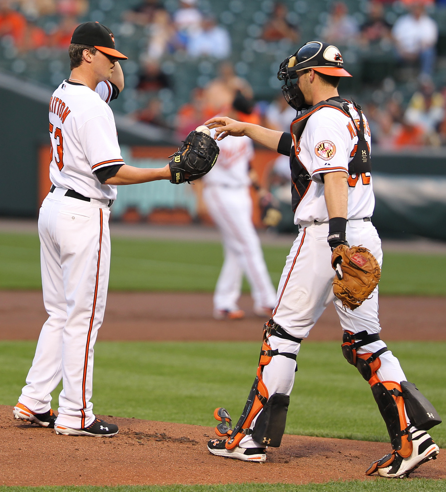

Welcome to Pro Baseball Elite. In this module we will instruct young pitchers how to safely and effectively throw a proper curveball. If not done correctly young baseball player run the risk of tearing their UCLs and suffering other arm damage. This often times stems from poor training and education, so our mission is to show you the ropes so that you don't have to worry about injuries and pitch effectively. Thank you for joining our program and enjoy this crash course
Communicate With Catcher

To begin this pithing sequence be sure to communicate with your catcher that a curveball is coming. At all levels of baseball commmunication between pitcher and cathcer is key, and there are countless examples of miscommunication even at the highest level. Often times if this isn't done properly, cathcers are unable to react to curveballs, or they are thrown at the wrong time. To avoid this from happening, first communicate the pitch with your catcher using predetermied signs that are difficult for the opposition to understand and steal.
Once communication has been established between pitcher and catcher the pitcher should hold the ball close to his chest concealed within the glove. This prevents the opposition and hitter to see the grip you are about to place on the ball. As in futuer steps, it is important that this is done naturally in your rgular sequence without digging in your glove or revealing anything that may tip off the pitch. If you move to much or take too long the oppositon will know an offspeed pitchis likely coming. Timing and fluidity is everything in this step.
We understand that the title, adjust grip on ball, is incredibly vague, but this is because there are many acceptable and effective curveball grips used amongst pitchers. For example, many pitchers like griping on the side of the seems with the index and middle finger together accross from the thumb. Fewer pitchers us a cross seem grip as you would with a generic fastball. The grip controls the type of rotation the batter will see out of your hand, so pick something that most comfotably suites your play stlye. You can experiment here as the grip is completely up to you.
This is the most important step because this is where most young pitchers hurt themelves throwing curveballs. The key is not changing your arm slot. Often times pitchers try to drop their arm slots to create the curve, but this ends up straining and tearing the ligaments in your pitching arm. To avoid this, pitch normally and focus on getting the drop from the release based off of the grip that we added in the last step.
To complete the pitch, finish your normal arm slot down towards the plate like any other pitch. This is important because as a pitcher, you finish in a fielding position. Also, finishing the pitch normally towards the plate shows no discrepancy between your curveball and other pitches which is key in hiding the fact that you threw that given pitch